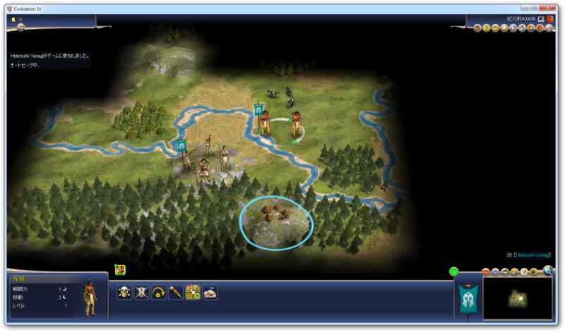
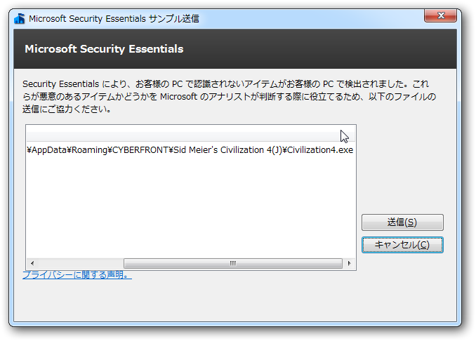

嘘を嘘と見抜けないと難しい
公開日：

僕はあんまりゲームをしない。格ゲーはできないし、シューティングは苦手だし、RPGは根気が続かない。FPS だけは少しだけ自信があるけれど、最後にやったのは Quake III なので、ロートルもいいところだ。でも、 Civilization シリーズだけは別で、暇をみつけてはやっている。最新版の 5 ではなく、ひたすら 4 をやっている。
- Civilization4 大商人経済 ‐ ニコニコ動画(原宿)
- Civilization4 スパイ経済 ‐ ニコニコ動画(原宿)
- Civilization4 サラディン戦記 ‐ ニコニコ動画(原宿)
Civ の魅力を知りたければ、これでも観ればいい。僕が千の言葉を連ねるより説得的だと思う。
ところがですよ、奥さん。

ウィルス扱い ｷﾀ━━━━(ﾟ∀ﾟ)━━━━!! *1
Civ 4: 危険度高、時間泥棒。@daruyanagi
— Ryou Ezoeさん (@EzoeRyou) 6月 15, 2012そういう意味では確かにそうかもしれないケドさ。
「誤検知」はどのセキュリティソフトにもありうるし、こうやって笑って済ませられるうちはまだいい。でも、リテラシーのまったくない人がこの「誤検知」をどのように受け止めるのか。それに対してセキュリティソフトベンダーはどのようにフォローしてくれるのか。最近、それが問題になっている。
窓の杜 - 【＃モリトーク】第12話：過剰セキュリティの落とし穴
うちでも、そういうのはある（オレの作ったアプリが不正なファイル呼ばわりされる件について - だるろぐ）のだけど、これって現実世界だったら名誉毀損も甚だしい。けれど、どこにフィードバックすればいいのかわからない。自分で調べろ？ なんでこちらが労力を割かなきゃいけないんだろう。
まぁ、これについては色々言うのも飽きたので、自分なりの論点を挙げて終わりにしたい。
- 使う側も勉強しようぜ
- ベンダーは使う側の判断材料をわかりやすく提供し、学習を助けるようにすべき。危機を煽ってるだけではダメだ
- 誤検知のフィードバックを容易に
- 誤検知で開発者に迷惑をかけた場合の保証体制を整えてほしい
インターネットこそ自分対その他のすべてが強いられる場であり、自立・自律が尊ばれる場*2。けれど、力関係は平等ではないから、いろんな歪みが生じてしまうんだな。